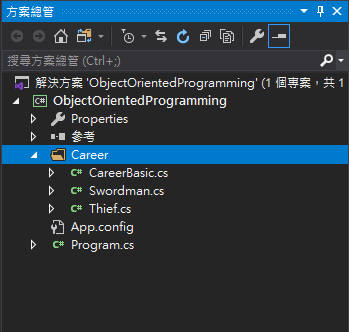
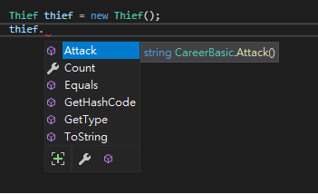
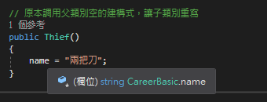
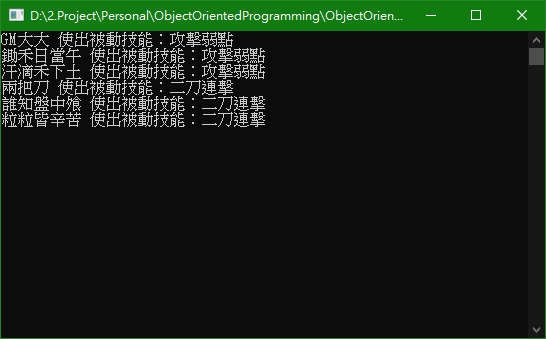

前言
說到物件導向就不能不知道OOP的三大特性：封裝、繼承、多型。
建議在閱讀本篇前先閱讀前篇「基礎概念」，在實例及解說上若前篇有講解過此篇則不在敘述。
正文
封裝（Encapsulation）
每個物件都包含進行操作時所需要的所有資訊，物件不必依賴其他物件來完成自己的操作，將方法、欄位、屬性和邏輯包裝在類別內，透過類別的實體來實現，外部物件無法了解物件的內部細節，有種隱藏起來的概念，外部對資料的操作也只能透過已經定義的介面，用一段簡白的話來說，對事只了解他的外在，無需理解內部構造，即為封裝。
封裝的好處：
- 良好的封裝能減少耦合（Coupling）
- 可自由修改類別內部的實現
- 類別具有清晰的對外界面
所以在設計 Swordman 類別時即為封裝，將自己的屬性及方法包裝起來，供給自己使用，不依賴他人。
1 | static void Main(string[] args) |
繼承（Inheritance）
繼承很字面的意思，那有幾個特性須知道，子類別繼承父類別時，子類別擁有父類別 pirvate 以外的屬性和方法，子類別也可擁有自己的屬性和方法，最後，子類別可以用自己的方式實現父類別的功能，即方法重載。
原本有 Swordman 的類別，現在增加一個 Thief 類別，與 Swordman 擁有相同的屬性和方法。
1 | // 盜賊 類別 |
剛創建的 Thief 與 Swordman 皆為職業，我們可以創建一個 CareerBasic 作為父類別，把職業會有的屬性或方法放到 CareerBasic 類別，讓 Thieft 與 Swordman 繼承 CareerBasic，這樣一來子類別就擁有父類別的屬性和方法，而不用寫相似的代碼在各個職業裡。
為了更清楚了解繼承的好處，將逐一建立類別，讓類別們各司其職。建立 Career Folder，建立 Swordman 與 Thief 類別將代碼全部移轉過來，建立 CareerBasic 類別先不寫任何代碼，最後記得要引用該 Folder。

將相同的程式碼移至 CareerBasic 下。前面提到子類別擁有父類別 private 以外的屬性和方法，所以子類別想繼承原本 private 的屬性或方法時，就需要設為 protected 層級，來提供給子類別使用。
1 | // 職業 父類別 |
Thief 為例，讓 Thief 繼承 CareerBasic 讓其擁有父類別的屬性、方法、欄位、事件、索引指示器，在對自己做調整，來實現父類別的功能。要注意的地方是建構式不能被繼承，只能被調用，使用 base 關鍵字調用父類別。來看看繼承 CareerBasic 後的 Thief 剩下什麼…
1 | // 繼承格式寫法為 => 子類別 : 父類別 |
可以看到子類別的代碼少了許多，嚴重懷疑是否有繼承父類，馬上來看 Thief 有什麼方法和屬性。

看到 thief 有 CareerBasic.Attack() 方法和 Count 屬性，真的繼承父類的屬性和方法，這樣我就放心了。在 Thief 空建構式是繼承父類別，現在希望 Thief 實體化時不使用父類別建構式，改為兩把刀，既然不一樣的名字那就不能寫在父類別，這時就可使用方法重載，讓子類別重寫父類別的功能。
1 | class Thief : CareerBasic |
要如何得知他是否有有繼承到父類別，而且還重寫父類別的方法？馬上來看看 name 來自哪裡…

可以看到 name 來自 CareerBasic 父類別，也就是說，當 Thief 實體化時，原本「GM大大」會被重寫為「兩把刀」
多型（Polymorphism）
定義名稱相同的方法，可以傳入不同個數的參數或是型態，利用參數個數和型態，呼叫到對應的方法。多型包含多載（Overloading）及複寫（Overriding），前面有介紹過多載（方法重載），來說說複寫吧！若子類別要實作父類別的成員，則將父類別成員宣告成 Virtral，子類別在使用 Override 來取代父類別實作。
假設每個職業都有一個被動技能，每個職業被動技能的名稱不一樣，每次釋放被動技能時會根據不同職業而 retrun 不同名稱，但他們都有釋放的動作，所以釋放這個動作就可以放在父類別，而名稱放在子類別透過子類別實現自己的名稱。
1 | // 父類別加入虛擬方法，讓子類別可以複寫 |
Thief 及 Swordman 分別複寫 PassiveSkill 方法。
1 | // Thief 複寫 父類別方法 |
不同職業有不同的被動技能，也可隨意對角色取名，但誰也不知道誰是什麼職業，只能透過喊出的技能名稱來分辨。馬上來體會多型的好處，創建一個職業陣列分別放入不同職業，並調用 PassiveSkill()
1 | CareerBasic[] careerBasics = new CareerBasic[6]; |

Reference
大話設計模式